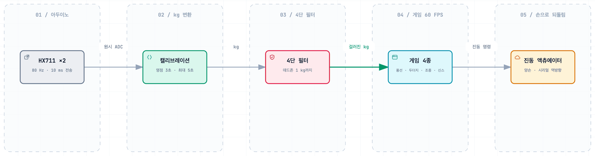

악력 재활 훈련 시스템
악력으로 조작하는 재활 훈련 게임
Impact
- 4단스파이크 제거 → 중간값 → 이동평균 → 데드존으로 손떨림을 걸러냄
- 3종센서 구현을 키보드·아두이노·라즈베리파이로 나눠 로드셀 없이도 게임을 개발
- 100Hz아두이노가 보내는 속도와 게임 루프 60 FPS를 스레드로 분리
Background
악력을 회복해야 하는 환자의 재활 훈련은 반복적이고 지루해서 오래 하기 어렵습니다. 쥐는 힘을 실시간으로 읽어 게임과 소리로 돌려주면 훈련을 이어갈 수 있을 것이라고 봤습니다.
만들어 보니 게임보다 신호 쪽이 어려웠습니다. 로드셀에서 나오는 원신호는 손이 닿는 순간 수십 킬로그램짜리 값이 튀고, 힘을 유지해도 값이 계속 흔들려서 게임 입력으로 바로 쓸 수 없었습니다.
Architecture

아두이노는 HX711로 로드셀을 읽어 보내기만 하고 판단은 라즈베리파이의 파이썬이 합니다. 센서 읽기는 별도 스레드에 두고, 게임 루프는 그 스레드가 갱신한 최신값 하나만 읽어 갑니다.

Contributions
4단 필터 — 순서가 설계
스파이크 제거, 중간값, 이동평균, 데드존 순서로 걸렀습니다. 스파이크를 먼저 버리지 않으면 뒤의 중간값과 이동평균이 계산에 쓰는 구간이 오염되고, 데드존을 먼저 걸면 스파이크가 그대로 지나갑니다. 급히 올라가는 값만 막고 내려가는 값은 통과시켰는데, 손을 빨리 놓는 것은 정상 동작이기 때문입니다.
큐 없이 최신값 하나
아두이노는 100Hz로 보내고 게임 루프는 60Hz로 돕니다. 센서가 더 빠르니 큐에 쌓으면 지연이 누적돼 화면이 손보다 늦게 반응합니다. 그래서 잠금으로 보호한 최신값 하나만 읽고, 큐는 진동 모터 명령을 보내는 반대 방향에만 썼습니다.
사용자별 캘리브레이션
시작할 때 영점 3초, 최대 악력 5초를 측정해 그 사람 기준으로 난이도를 맞춥니다. 한 번 잡은 값은 파일로 남겨서 다음 실행에서는 건너뜁니다. 매번 다시 재게 하면 게임을 켜는 것 자체가 일이 됩니다.
하드웨어 없이 개발 가능한 구조
GripSensor 인터페이스에 키보드와 아두이노, 라즈베리파이 세 가지 구현을 뒀습니다. 로드셀이 없어도 게임 로직을 개발하고 디버깅할 수 있어서, 두 사람이 하나의 하드웨어를 기다리지 않아도 됐습니다.
Troubleshooting
진동이 울리면 오른손 센서가 끊긴다
- 문제
- 진동 모터가 돌 때만 한쪽 로드셀 값이 사라졌습니다.
- 원인
- 신호 간섭이 아니라 전류 부하였습니다. 모터를 아두이노 핀에서 직접 구동하면서 센서 쪽 전원이 흔들렸습니다.
- 해결
- NPN 트랜지스터로 모터 구동 회로를 분리했습니다. 모터는 켜고 끄기만 하고 세기는 조절하지 않습니다.
- 결과
- 진동을 쓰면서도 양손 값이 함께 유지됩니다.
원신호를 그대로 쓰면 조작이 안 된다
- 문제
- 손이 닿는 순간의 값이 최대 악력으로 기록돼 캘리브레이션이 망가지고, 힘을 유지하는 구간에서도 캐릭터가 떨었습니다.
- 원인
- 원신호에 접촉 충격과 진동이 함께 들어 있는데 둘의 대처 방법이 다릅니다.
- 해결
- 위의 네 단계 필터를 순서까지 고정해 적용하고, 캘리브레이션은 필터를 통과한 값으로만 잡았습니다.
- 결과
- 쥐는 힘이 그대로 입력이 됐습니다. 게임 3종과 신디사이저는 요구하는 입력 특성이 서로 달라서 필터 검증에 그대로 썼습니다.
직접 만든 것과 아닌 것
로드셀 마운트는 3D 모델링해서 출력했고 아두이노 시리얼 프로토콜도 직접 설계했습니다. 다만 출력물 중에 직접 설계한 것으로 확인되는 것은 베이스 부품이고 나머지는 출처가 확인되지 않습니다.